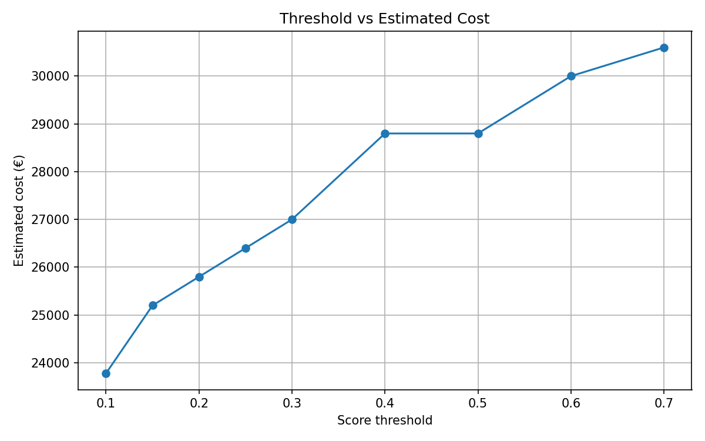
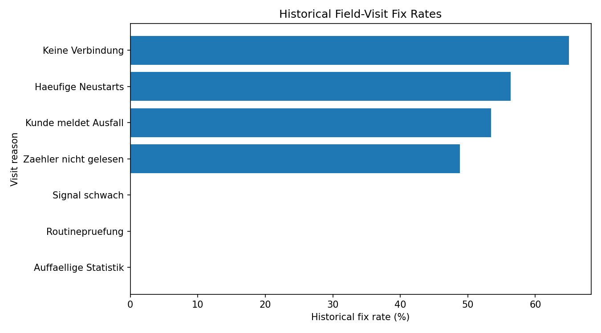

3. Data & Leakage Prevention
Only information that would genuinely be available before the weekly decision is used to rank the gateways.
Pre-Monday Cutoff
Only telemetry available strictly before Monday is included. Data from the prediction week is never used.
Recent 7 Days
The scoring window covers the seven days immediately before Monday, keeping the ranking focused on recent gateway behaviour.
Two Key Signals
For every gateway, I aggregate:
- Disconnection count
- No-connection importance
These signals are then normalized before calculating the final score.
🔒 No Future Leakage
The most important rule is simple: the model must not see the future.
For each prediction week, only telemetry that was already available before that Monday is used. This makes the weekly ranking reproducible and closer to how the decision would work in real operations.
4. Risk Score
A simple, transparent score that converts recent gateway behaviour into a clear priority for field visits.
70% · Disconnection
The primary reliability signal. More recent disconnections indicate stronger evidence of connectivity problems.
Primary signal
30% · No-Connection
A secondary reliability signal that adds additional evidence when prioritizing gateways.
Secondary signal
Top 15 · Final Priority
All gateways are scored and sorted from highest to lowest risk. The 15 highest-scoring gateways become the weekly visit priority.
5. Why This Method?
I compared different approaches and selected the one that gives a good balance between evidence, simplicity and explainability.
Alternative Tested
I tested no-connection importance alone. It achieved slightly better historical AUC, so it was considered as a serious alternative.
Weight Comparison
Different weight combinations produced very similar top-15 gateway lists across the challenge weeks.
Final Choice
I selected 70% disconnection + 30% no-connection importance because it combines meaningful signals while remaining transparent and easy to modify.
6. Cost Decision
| Cost | Meaning |
|---|---|
| €380 | Cost per dispatched field visit |
| €600 / week | Cost when a faulty gateway remains unattended for one week |
7. Final Output & Validation
120 rows = 15 gateways × 8 challenge weeks.
Ranks are 1–15 per week, scores are numeric, reasons are present, and duplicate gateway selections within a week are not allowed.
Expected: predictions.csv: OK
8. Threshold Sensitivity — February 16
| Threshold | High-risk candidates |
|---|---|
| 0.10 | 19 |
| 0.20 | 13 |
| 0.30 | 9 |
| 0.50 | 4 |
| 0.70 | 1 |
9. Presentation & Demo Video
One complete 6–8 minute presentation video explaining the project from problem to final solution.
My NEXORA Presentation
To add your video manually, put your MP4 file in the same folder as this website and name it nexora-demo.mp4. Then refresh the page.
For other people to see the video, the MP4 must be deployed/uploaded together with this website.
🗓️ My Complete Project Plan
I divided the available time into clear phases so that I could first understand the problem, then analyse the data, build the solution, test it and finally prepare the submission.
Aug 31
Understand the Challenge
Studied the challenge requirements and prepared questions to clarify the problem and constraints.
Sep 1–3
Explore the Data
Explored the available datasets, telemetry signals and the supplied baseline approach.
Sep 4–5
Finalize the Approach
Compared possible approaches, selected the Data Science direction and prepared final questions.
Sep 6–9
Build the Solution
Built Part 1 and developed the selected Data Science approach, including the scoring and prediction workflow.
Sep 10–12
Testing & Improvement
Tested the predictions, compared approaches, checked validation and improved the solution based on the evidence.
Sep 13–14
Documentation
Prepared the decisions, Data Science analysis, limitations and AI-usage documentation.
Sep 15
Final Testing & Video
Performed final checks, prepared the presentation and recorded the project demonstration.
Sep 16 🚨
Final Submission
Final review and submission completed before 11:59 PM.
11. How I Used AI
AI was used as a supporting tool during the project. The problem definition, experimentation, decisions and final verification were done by me.
Understanding the Problem
When some requirements or technical terms were unclear, I used AI to explain them in simpler terms so I could understand the problem correctly.
Exploring the Data
I asked AI for suggestions on how to inspect the telemetry and identify useful signals. I then ran the Python analysis myself and checked the actual results.
Python Help
When I was stuck with Python code, commands or errors, I used AI to understand the problem and get possible solutions. I tested those solutions locally before using them.
Comparing Approaches
I used AI to discuss different scoring ideas, weighting choices and their advantages and disadvantages. I made the final method choice based on the actual analysis results.
Writing & Explanation
I used AI to improve the clarity of documentation and explanations. The technical content and project decisions came from my own work and analysis.
Final Verification
I did not blindly accept AI output. I checked the generated code, commands, prediction results, validation output and Git status against my actual project files.
🤝 My Role vs AI's Role
👤 My Role
Defined the problem, explored the data, tested approaches, selected the final method, interpreted results and verified the final solution.
🤖 AI's Role
Explained concepts, suggested approaches, helped debug code, answered questions and helped improve documentation.
⚠️ An AI Mistake I Caught
AI suggested a Windows command for creating the .gitignore file, but the generated command produced incorrect file contents.
I noticed the problem by checking the actual file and verifying Git's ignore behaviour. I corrected the file and confirmed that the challenge dataset was not being tracked.
This showed me that AI output should be treated as a suggestion, not as automatically correct.
AI helped me move faster when I was stuck — but I remained responsible for the decisions and the final result.
12. Data Science Charts
These charts support the cost and historical field-visit analysis.
Threshold Cost Analysis

Historical Field-Visit Fix Rates

Project Documents
14. Limitations & What Comes Next
The solution is useful, but it is important to be honest about what the current data can and cannot prove.
Limited Labels
The available engineer reviews provide only a small labelled sample. They do not represent complete ground truth for all gateways and all weeks.
Selection Bias
Historical field visits were not random. Gateways were often visited because there was already a reason for suspicion.
Another Two Weeks
New field outcomes would allow us to measure false visits, missed broken gateways and actual weekly cost.
🚀 What Would I Do Next?
1️⃣ Measure Actual Outcomes
Compare every recommended visit with the actual field result: fault found, no fault found, or no access.
2️⃣ Reassess the Score
Use the new evidence to check whether the current 70/30 weighting should remain or be recalibrated.
3️⃣ Recalculate the Cost
Measure the real cost of unnecessary visits versus the cost of leaving a faulty gateway unattended.
💡 Honest Conclusion
The current solution should be viewed as a practical prioritization system, not a perfect failure predictor. Its biggest opportunity is to learn from the actual outcomes of future field visits.
The next improvement should come from better evidence, not simply from making the model more complicated.
16. Project Images
Add your project screenshots, presentation slides, circuit diagrams, results and other images here.
Project Image 1

Click the image to zoom and view full screen.
Project Image 2

Click the image to zoom and view full screen.
Project Image 3

Click the image to zoom and view full screen.
15. Final Conclusion
From Data → Decision → Action 🚀
The goal was not simply to identify faulty gateways. The real challenge was to decide where the next 15 field visits can create the most value.
Our solution converts recent gateway reliability signals into a transparent risk score, ranks all gateways, and gives the operations team a clear weekly priority list with a reason for every selection.
📊 Data
Recent telemetry is transformed into meaningful reliability signals instead of relying on raw data alone.
🎯 Decision
A simple 70/30 risk score identifies the gateways with the highest estimated reliability risk.
🚗 Action
The operations team receives exactly 15 prioritized gateways to visit each week.